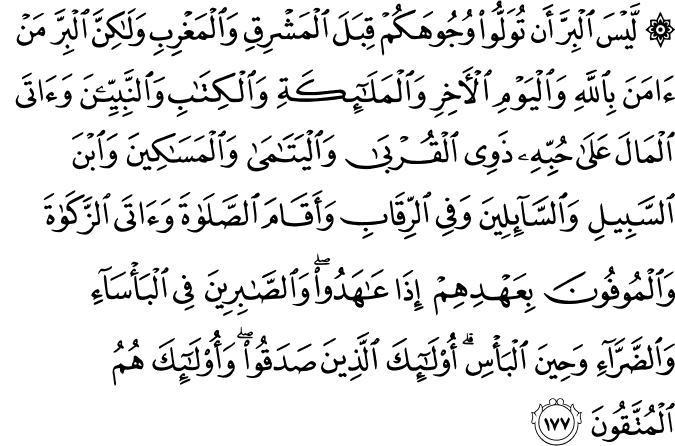

আমাদের সমাজে কিছু মুসলিম আছেন যাদেরকে বাইরে থেকে দেখতে অত্যন্ত ধার্মিক মনে হয়। এরা নিয়মিত পাঁচ ওয়াক্ত নামাজ পড়তে পড়তে কপালে দাগ ফেলে দিয়েছেন। মসজিদে তাদেরকে নিয়মিত দেখা যায়। কিন্তু গরিব আত্মীয়রা তাদের কাছে বার বার সাহায্য চেয়ে “আগামী রমজান আসুক” শুনে ফিরে যায়। এলাকার এতিমখানায় কোনোদিন তাদের দান করতে দেখা যায় না। মসজিদে দান বাক্স তাদের কাছে আসতে শুরু করলে হঠাৎ করে তারা চোখ বন্ধ করে গভীর জিকিরে মগ্ন হয়ে যান, বাক্সটা তাদের সামনে দিয়ে চলে যায়। এরা ব্যবসায় কাস্টমারকে অভিনব পদ্ধতিতে বেশি দামে কম মাল দেওয়ার ব্যাপারে অত্যন্ত পারদর্শী। কর্মীদেরকে কত উপায়ে কম বেতন, কম বোনাস দেওয়া যায়, সে ব্যাপারে তাদের অসামান্য প্রতিভার পরিচয় পাওয়া যায়। তারপর যখন তাদের কোনো বড় ধরনের বিপদ হয়, তখন তাদের প্রলাপ শুরু হয়— “হায় আল্লাহ تعالى! আমি পাঁচ ওয়াক্ত নামাজ পড়ি, রমজানে রোজা রাখি, যাকাত দেই। আমি আপনার কত খাস বান্দা। তারপরেও আমার কেন বিপদ হয়?”
এধরনের মানুষদের জন্য আল-বাক্বারাহ’র এই আয়াতটি চিন্তার বিষয়, কারণ আল্লাহ تعالى এই আয়াতে বলছেন যে, আমরা যদি শুধু নামাজ পড়ি, কিন্তু অন্য কোনো ভালো কাজ না করি, তাহলে তাতে কোনো পুণ্য নেই—
পূর্ব-পশ্চিমে মুখ ফেরালেই সেটা ধার্মিকের মতো কাজ হয়ে গেল না। বরং সত্যিকারের ধার্মিকতা হচ্ছে: যারা আল্লাহর تعالى প্রতি বিশ্বাস রাখে এবং বিচারের দিন, ফেরেশতাগন, সব কিতাব এবং নবীদের প্রতি বিশ্বাস রাখে। যারা নিজেদের সম্পদকে ভালোবাসার পরেও তা দান করে নিকটজনকে, এতিম, মিসকিনকে, বিপদে পড়া ভ্রমণকারীদেরকে, যারা সাহায্য চায় তাদেরকে এবং দাস-যুদ্ধবন্দিদের মুক্ত করার জন্য দান করে। যারা সালাত প্রতিষ্ঠা করে, যাকাত আদায় করে, কথা দিয়ে কথা রাখে; দুর্দশা-দারিদ্রতা, অসুস্থতা-কষ্ট এবং ভীষণ কঠিন সময়েও ধৈর্যধারণকারী। —এরাই নিজেদেরকে প্রমাণ করেছে, আর এরাই সত্যিকারের তাকওয়া অর্জন করতে পেরেছে। [আল-বাক্বারাহ ১৭৭]
এখানে পূর্ব-পশ্চিম দিকে মুখ করা বলতে কিবলা পরিবর্তের পরে মক্কার দিকে, আর কিবলা পরিবর্তনের আগে বাইতুল মুকাদ্দাসের দিকে মুখ ফিরিয়ে নামাজ পড়া বোঝানো হয়েছে।[১২]
আজকাল অনেক আধুনিক মুসলিম ধর্ম মানার কোনো কারণ খুঁজে পান না। তারা ভাবেন যে, ধর্মীয় রীতিগুলো অনুসরণ করা, যেমন নামাজ পড়া, রোজা রাখা —এগুলো করে কী হবে? এগুলো করে কী মানুষের কোনো লাভ হচ্ছে? মানুষের কষ্ট কমছে? অভাব দূর হচ্ছে? সমাজের সংস্কার হচ্ছে? — তাদের জন্য এই আয়াতটি অনুপ্রেরণা দেবে, কারণ আল্লাহ تعالى বলছেন যে, ঈমান আনার পরেই অভাবী মানুষকে সম্পদ দান করা, সমাজের সংস্কার করা এগুলো একজন সত্যিকারের মুসলিম হওয়ার শর্ত। শুধু নামাজ পড়লাম, যাকাত দিলাম, কিন্তু ওদিকে অন্য কোনো ভালো কাজ করলাম না, তাহলে কোনো লাভ নেই।[১২][৪] ধর্মীয় রীতিনীতিগুলো অবশ্যই মানতে হবে, তবে সে সাথে ভালো কাজগুলোও অবশ্যই করতে হবে।
এই আয়াতে আল্লাহ تعالى আমাদেরকে একটি চমৎকার ভারসাম্যপূর্ণ দৃষ্টিভঙ্গি শিখিয়েছেন। যারা শুধু দিনরাত ধর্মীয় অনুষ্ঠানগুলো পালন করতেই মগ্ন, কিন্তু তার অভাবী আত্মীয়, প্রতিবেশী, এলাকার এতিম, দুস্থ, অসহায়দের জন্য কিছুই করছেন না, তাদেরকে আল্লাহ تعالى বলছেন যে, শুধু তাদের ধর্মকর্ম করলেই হবে না, তাদেরকে মানুষের জন্যও করতে হবে। অন্যদিকে যারা শুধুই মানুষের জন্য কাজ করাটাই যথেষ্ট মনে করেন, তাদেরকে আল্লাহ تعالى এই আয়াতে শেখাচ্ছেন যে, সালাত আদায় করা, যাকাত দেওয়া, কিতাব অনুসরণ করা, সঠিকভাবে ঈমান আনাটাও অত্যাবশ্যকীয়। শুধু ‘মানবধর্ম’ বলে কোনো কিছুর গ্রহণযোগ্যতা ইসলামে নেই। ইসলাম একটি কমপ্লিট প্যাকেজ।
এই আয়াতে ٱلْبِرّ আল-বিরর: সত্যিকারের ভালো কাজ, সৎকাজ, ধার্মিকের মতো কাজ-এর সংজ্ঞা আমাদেরকে দেওয়া হয়েছে। আল্লাহর تعالى দৃষ্টিতে যেসব ভালো কাজগুলো আমাদেরকে তাকওয়া অর্জন করে মুত্তাকী হওয়ার সম্মান দেবে, তা হচ্ছে—
- ১) আল্লাহ تعالى, কিয়ামতের বিচারের দিন, ফেরেশতাগন, সব কিতাব এবং নবীদের প্রতি দৃঢ় বিশ্বাস রাখা।
- ২) নিজের সম্পত্তিকে ভালবাসার পরেও তা দান করা।
- ৩) সালাত প্রতিষ্ঠা করা, যাকাত আদায় করা।
- ৪) কথা দিয়ে কথা রাখা
- ৫) দুর্দশা-দারিদ্রতা, অসুস্থতা-কষ্ট, অত্যন্ত কঠিন সময়েও ধৈর্য-নিষ্ঠার সাথে চেষ্টা করা।
যারা এগুলো করে, তারাই সত্যিকারের সৎ মানুষ, ন্যায়পরায়ণ। এরাই সত্যিকার অর্থে আল্লাহর تعالى প্রতি তাকওয়া অর্জন করতে পেরেছে। যারা এগুলো না করে শুধুই ধর্মকর্ম করে, তারা যতই দাঁড়ি-টুপি-সালওয়ার-কামিজের তাকওয়ার বেশ ধরুক না কেন, তাদের এখনো মুত্তাকী হওয়ার শর্ত পূরণ করা বাকি আছে।
নিজের সম্পদকে ভালোবাসার পরেও দান করা
এই আয়াতে আল্লাহ تعالى আমাদেরকে যাকাত আদায়ের পাশাপাশি সম্পদ দান করতে বলেছেন। এমন সম্পদ যা আমরা ভালোবাসি। পুরনো কাপড়, নষ্ট হয়ে যাওয়া আসবাবপত্র, ফ্রিজের বাসি খাবার —এগুলো আমরা ভালোবাসি না। এগুলো দান করার মধ্যে কোনো বিরর বা ভালো কাজ নেই। বিরর হচ্ছে সেটাই দান করা, যেটা আমি নিজের জন্য ভালবাসি।[৪][১২][১৪]
আপনি দেখবেন: কিছু মানুষ আছে যারা পাঁচ ওয়াক্ত নামাজ পড়ে, রমযানে ত্রিশটা রোজা রাখে, কিন্তু গত এক বছরেও কোনোদিন কোনো এতিমখানায় একটা টাকাও দিতে পারেনি। ড্রাইভার, কাজের বুয়া, বাড়ির দারোয়ান তার কাছে বার বার টাকা চাইতে এসে— “দিবো, দিবো, রমযান আসুক” —এই শুনে খালি হাতে ফিরে গেছে। গরিব আত্মীয়স্বজন এসে কয়েকদিন থেকে ফিরে গেছে, কিন্তু কোনো টাকা নিয়ে যেতে পারেনি। মসজিদে বহুবার সে বিভিন্ন উদ্যোগের জন্য টাকার আবেদন শুনেছে, কিন্তু কোনোদিন পকেটে হাত দিয়ে একটা একশ টাকার নোট বের করে দিতে পারেনি। ঘরের মধ্যে এসি ছেড়ে জায়নামাজে বসে নামাজ পড়া সোজা কাজ, কিন্তু পকেট থেকে হাজার টাকা বের করে গরিব আত্মীয়, প্রতিবেশী, এতিমখানায় দেওয়া যথেষ্ট কঠিন কাজ। এর জন্য ঈমান লাগে।
এই ধরনের মানুষদের আল্লাহর تعالى সাথে সম্পর্ক কিছু ধর্মীয় অনুষ্ঠান পর্যন্তই। আল্লাহর تعالى প্রতি তাদের বিশ্বাস এখনও এতটা মজবুত হয়নি যে, তারা আল্লাহর تعالى উপর বিশ্বাস রেখে হাজার খানেক টাকা নির্দ্বিধায় একটা এতিমখানায় দিয়ে দিতে পারে। কিয়ামতের দিনের প্রতিদান নিয়ে এখনও তাদের সন্দেহ ততটা দূর হয়নি যে, তারা নির্দ্বিধায় গরিব আত্মীয়দের চিকিৎসায় দশ হাজার টাকা লাগলেও, সেটা হাসিমুখে দিয়ে দিতে পারে। তারা যদি সত্যিই বিশ্বাসী হতো, তাহলে তারা প্রতিদিন সকালে উঠে চিন্তা করতো, “আজকে আমি কাকে আল্লাহর تعالى সম্পদ ফিরিয়ে দিতে পারি? আল্লাহর تعالى কোন মেহমানকে আজকে আমি খাওয়াতে পারি? কার কাছে গিয়ে আজকে আমি জান্নাতের জন্য সিকিউরিটি ডিপোজিট করতে পারি?”
আমাদের অনেকেরই দান করতে গেলে অনেক কষ্ট হয়। কোনো এতিম খানায় দান করলে, বা কোনো গরিব আত্মীয়কে হাজার খানেক টাকা দিলে, মনে হয় কেউ যেন বুকের একটা অংশ ছিঁড়ে নিয়ে গেল। আপনি ব্যাপারটাকে এভাবে চিন্তা করতে পারেন: দুনিয়াতে আপনার একটি একাউন্ট রয়েছে, আখিরাতে আপনার আরেকটি একাউন্ট রয়েছে। আপনি আল্লাহর تعالى রাস্তায় যখন খরচ করছেন, আপনি আসলে আপনার দুনিয়ার একাউন্ট থেকে আখিরাতের একাউন্টে ট্রান্সফার করছেন মাত্র। এর বেশি কিছু না। আপনার সম্পত্তি কোথাও হারিয়ে যাচ্ছে না। আপনারই থাকছে। একদিন আপনি দেখতে পাবেন: আখিরাতের একাউন্টে কত জমেছে এবং আল্লাহ تعالى আপনাকে কত গুণ বেশি মুনাফা দিয়েছেন। সেদিন আমাদের শুধুই আফসোস থাকবে, “হায়, আর একটু যদি এই একাউন্টে ট্রান্সফার করতাম, তাহলে আজকে এই ভয়ংকর আগুন থেকে বেঁচে যেতাম!”
কথা দিয়ে কথা রাখা
যারা কথা দিয়ে কথা রাখে — ٱلْمُوفُونَ এসেছে وفي থেকে যার অর্থ: ওয়াদা পূরণ করা, অঙ্গীকার অনুসারে কাজ করা, পাওনা ঠিকভাবে মিটিয়ে দেওয়া ইত্যাদি। এর সরাসরি বাংলা অনুবাদ হবে: অঙ্গীকার রক্ষাকারী। আল্লাহ تعالى এই আয়াতে বিশেষভাবে অঙ্গীকার করে তা পূরণ করতে জোর দিয়েছেন। ‘নামাজ পড়া’, ‘যাকাত দেওয়া’, ‘আল্লাহতে تعالى বিশ্বাস করা’ ইত্যাদি ক্রিয়া পদ থেকে তিনি হঠাৎ করে পরিবর্তন করে বিশেষণ পদে চলে গেলেন “অঙ্গিকার রক্ষাকারী”।[৭]
অদ্ভুত ব্যাপার হচ্ছে: তিনি ধর্মীয় রীতিনীতিগুলোকে কোনো বিশেষ জোর না দিয়ে অঙ্গীকার রক্ষা করাকে বিশেষভাবে জোর দিলেন। এই বিশেষ জোর দেওয়ার কারণ হচ্ছে কথা দিয়ে কথা রাখা, অঙ্গীকার পূরণ করা ইসলামের একটি অত্যন্ত গুরুত্বপূর্ণ শিক্ষা। চরিত্র গঠনের প্রথম শর্ত হচ্ছে সত্যবাদী হওয়া, অঙ্গীকার রক্ষা করা। যে তা করতে পারে না, তাকে কেউ বিশ্বাস করে না। তার উপর কেউ আস্থা রাখতে পারে না। তাকে কোনো গুরুত্বপূর্ণ দায়িত্ব দিতে ভয় পায়। যখন কোনো জাতির মানুষরা এরকম সন্দেহজনক, অনির্ভরযোগ্য হয়ে যায়, তখন সেই পুরো জাতির বদনাম হয়ে যায়।[৭]
কোনো এক অদ্ভুত কারণে মুসলিমদের ‘দুই নম্বর স্বভাবের জাতি’ হিসেবে পৃথিবীতে ব্যাপক বদনাম হয়ে গেছে। মুসলিমদের সাথে ব্যবসা করতে অমুসলিমরা তো দূরের কথা, মুসলিমরা পর্যন্ত ভয় পায়। বরং উল্টো অনেক মুসলিমরাই চেষ্টা করে হিন্দু বা খ্রিস্টান কাউকে ব্যবসায় পার্টনার বানানোর, না হলে অন্তত একাউন্টেন্টের দায়িত্বটা দেওয়ার। মুসলিমরা যদি সত্যিই ইসলাম মেনে চলত, তাহলে এত কষ্ট করে আর ইসলামের প্রচার করতে হতো না। মুসলিমদেরকে দেখে মুগ্ধ হয়ে মানুষ ইসলাম গ্রহণ করত; যেভাবে কিনা ইন্দোনেশিয়া, মালয়েশিয়ার মানুষেরা ভারত এবং আরব মুসলিম বণিকদের সততা, নিষ্ঠা, দৃঢ় নৈতিকতা দেখে মুগ্ধ হয়ে ইসলাম গ্রহণ করে পরিণত হয়েছে পৃথিবীর অন্যতম মুসলিম-প্রধান দেশে।
দুর্দশা-দারিদ্রতা, অসুস্থতা-কষ্ট এবং ভীষণ কঠিন সময়ে ধৈর্যধারণকারী
এই আয়াতে আল্লাহ تعالى আমাদের তিনটি বিশেষ ক্ষেত্রে ‘সবর’ করতে বলেছেন—
- ১) ٱلْبَأْسَآء — দুর্দশা, দারিদ্রতা, প্রাকৃতিক দুর্যোগ, মহামারি ইত্যাদি।
- ২) ٱلضَّرَّآء — অসুস্থতা, কষ্ট, যন্ত্রণা।
- ৩) حِينَ ٱلْبَأْس — ভীষণ কঠিন সময় — যেমন যুদ্ধের সময়, মুসলিমদের সাথে দেশের সরকারের সীমাহীন অন্যায়ের সময় ইত্যাদি।
সবর মানে হাত-পা গুটিয়ে বসে থাকা নয়। সবর এর অর্থ হচ্ছে: প্রতিকূলতার মধ্যে ধৈর্য নিয়ে, লক্ষ্য ঠিক রেখে, অবস্থার পরিবর্তনের জন্য সুযোগের অপেক্ষা করা।[৫] সবরের তিনটি অংশ রয়েছে: ১) ধৈর্যের সাথে কষ্ট, দুর্ভোগ সহ্য করা, ২) অবস্থার পরিবর্তন করতে গিয়ে কোনো পাপ করে না ফেলা, ৩) আল্লাহর تعالى আনুগত্য থেকে সরে না যাওয়া।[৪] মানুষ সাধারণত সবর বলতে প্রথমটিকেই বুঝে থাকে। কিন্তু একজন মুসলিমের জন্য এই তিনটিই বাধ্যতামূলক। এই তিনটির একটি যদি বাদ যায়, তাহলে তা কু’রআন এবং হাদিসের ভাষায় সবর নয়।[৪]
আপনার কোনো জটিল অসুখ হলো? আপনি ভাবছেন আপনি দুর্ভাগা? পোড়াকপালে? না। ঠিক যেই দিন, যেভাবে আপনার জটিল অসুখ শুরু হওয়ার নির্দেশ আল্লাহ تعالى দিয়েছিলেন, ঠিক সেদিন থেকে সেভাবেই তা শুরু হয়েছে। আপনার অসুখটা আল্লাহ تعالى আপনাকে ঠিক সেভাবেই দেবেন বলে ঠিক করে রেখেছিলেন। এখানে কোনো কাকতালীয় ব্যাপার নেই, কোনো ভাগ্য জড়িত নেই। সব কিছুই আল্লাহর تعالى পরিকল্পনা।
অনেক সময় আমাদের ভেতরে একটা দাবি চলে আসে যে, আমি পাঁচ ওয়াক্ত নামাজ পড়ি, রোজা রাখি, যাকাত দেই, মাঝে মাঝে দান-খয়রাত করি, ইসলাম নিয়ে পড়াশুনা করি, তাহলে আমার জীবনে আবার কষ্ট আসবে কেন? একজন মুসলিমের জীবন তো সহজ, স্বাচ্ছন্দ্যের হওয়ার কথা? আল্লাহর تعالى পছন্দের বান্দাদের তো কোনো বড় ধরনের কষ্ট পাওয়ার কথা না। জীবনে ছোটখাটো কষ্ট মেনে নেওয়া যায়। কিন্তু নিকটজনকে ‘অকালে’ হারানো, চাকরি চলে যাওয়া, ব্যবসা ধ্বসে পরিবার নিয়ে পথে বসা, নিজের কঠিন অসুখ হওয়া, সন্তান বখে যাওয়া, বাবা-মার কঠিন অসুখ, দেশে প্রাকৃতিক দুর্যোগ, যুদ্ধ হয়ে দিনের পর দিন না খেয়ে মানবেতর জীবন যাপন করা —এইসব কঠিন সমস্যা তো অমুলিমদের হওয়ার কথা? মুসলিমদের জীবনে তো কখনো এত বড় বিপদ হওয়ার কথা নয়? আল্লাহর تعالى তো মুসলিমদের ভালো রাখার কথা? —এই ধারণা মুসলিমদের ভেতরে কীভাবে চলে এসেছে, তা আমাদের জানা নেই, কারণ কু’রআন পড়লে পরিষ্কারভাবে দেখা যায় মুসলিমদেরকে জীবনে কঠিন পরীক্ষা দিয়ে দেখা হবে যে, তারা আসলেই নামে-মুসলিম, নাকি কাজেও মুসলিম।
—এসব কথা বলা সহজ, কিন্তু দুঃখ, দুর্দশার সময় এগুলো মনে রাখা এবং এই আয়াত অনুসারে আমল করা খুবই কঠিন। এর জন্য অনেক মানসিক ট্রেনিং দরকার। হঠাৎ করে কেউ তা অর্জন করে না। যথেষ্ট পূর্বপ্রস্তুতি নিতে হয়। প্রতিবার বিপদে পড়ার পর নিজেকে সংশোধন করতে হয়। কোনো কষ্টের সময় পার হয়ে গেলে, কঠিন দিনগুলোর কথা মনে করে, কী কী ভুল হয়েছিল, আল্লাহর সম্পর্কে কী কী বাজে কথা ভেবেছিলাম, যা ভবিষ্যতে আর করা যাবে না, তা নিজেকে প্রশ্ন করতে হয়। একারণেই যারা এই মানসিক অবস্থায় যেতে পেরেছেন, আল্লাহ تعالى তাদের এই অর্জনকে এত সম্মান করেছেন। তিনি আয়াতের এই অংশটুকুকে বিশেষ ব্যাকরণে বলেছেন— وَٱلصَّٰبِرِينَ, যা সাধারণভাবে হওয়ার কথা وَٱلصَّٰبِرون। এই বিশেষ গঠন এই ধৈর্যশীল মানুষদেরকে এই আয়াতের অন্যান্য গুণের অধিকারীদের থেকে আলাদা সম্মান এনে দিয়েছে।[৬][১২][৭]
এরাই নিজেদেরকে প্রমাণ করেছে, আর এরাই সত্যিকারের তাকওয়া অর্জন করতে পেরেছে
সবশেষে আল্লাহ تعالى বলছেন যে, যারা আল-বিরর এর এই বৈশিষ্ট্যগুলো তাদের জীবনে অর্জন করতে পেরেছেন, শুধুমাত্র তারাই নিজেদেরকে সত্যিকারের মুসলিম বলে প্রমাণ করতে পেরেছেন। এরা নিজেদের বিশ্বাসকে শুধু কথায় নয়, কাজে প্রমাণ করে দেখাতে পেরেছেন।
ইসলাম ধর্মের আনুষ্ঠানিক ইবাদতগুলো নিষ্ঠার সাথে পালনের পাশাপাশি যারা নিজেদের ভালোবাসার সম্পদ দান করে সমাজের অসহায় মানুষের পাশে দাঁড়িয়েছে, সমাজের সংস্কার করেছে, বিপদে পড়া মানুষের যথাসাধ্য উপকার করার চেষ্টা করেছে, কথা দিয়ে কথা রেখেছে এবং কঠিন সময়ে আল্লাহর تعالى প্রতি বিশ্বাস রেখে ধৈর্যের সাথে জীবন সংগ্রাম পার করার চেষ্টা করেছে — তারাই সত্যিকারের মুত্তাকী। এরাই সত্যিকার অর্থে আল্লাহ تعالى যে আছেন, তা সবসময় বিশ্বাস করে। এরা সবসময় সাবধান থাকে, যেন তারা এমন কিছু না করে বসে, যাতে তিনি রাগ করবেন। এরা সবসময় আল্লাহর تعالى প্রতি সচেতন।
সূত্র:
- [১] নওমান আলি খানের সূরা আল-বাকারাহ এর উপর লেকচার এবং বাইয়িনাহ এর কু’রআনের তাফসীর।
- [২] ম্যাসেজ অফ দা কু’রআন — মুহাম্মাদ আসাদ।
- [৩] তাফহিমুল কু’রআন — মাওলানা মাওদুদি।
- [৪] মা’রিফুল কু’রআন — মুফতি শাফি উসমানী।
- [৫] মুহাম্মাদ মোহার আলি — A Word for Word Meaning of The Quran
- [৬] সৈয়দ কুতব — In the Shade of the Quran
- [৭] তাদাব্বুরে কু’রআন – আমিন আহসান ইসলাহি।
- [৮] তাফসিরে তাওযীহুল কু’রআন — মুফতি তাক্বি উসমানী।
- [৯] বায়ান আল কু’রআন — ড: ইসরার আহমেদ।
- [১০] তাফসীর উল কু’রআন — মাওলানা আব্দুল মাজিদ দারিয়াবাদি
- [১১] কু’রআন তাফসীর — আব্দুর রাহিম আস-সারানবি
- [১২] আত-তাবারি-এর তাফসীরের অনুবাদ।
- [১৩] তাফসির ইবন আব্বাস।
- [১৪] তাফসির আল কুরতুবি।
- [১৫] তাফসির আল জালালাইন।
- [১৬] লুঘাতুল কুরআন — গুলাম আহমেদ পারভেজ।